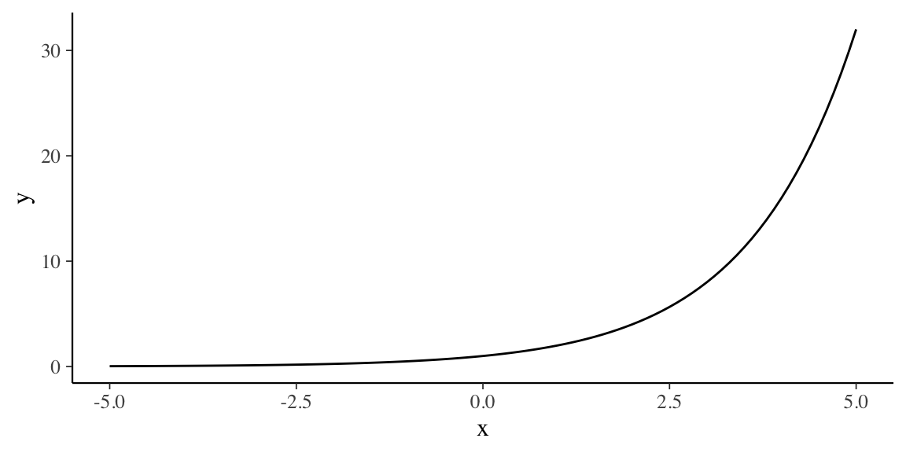
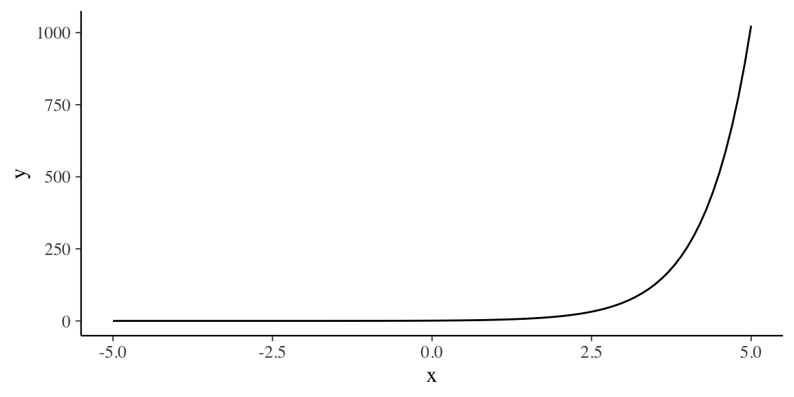
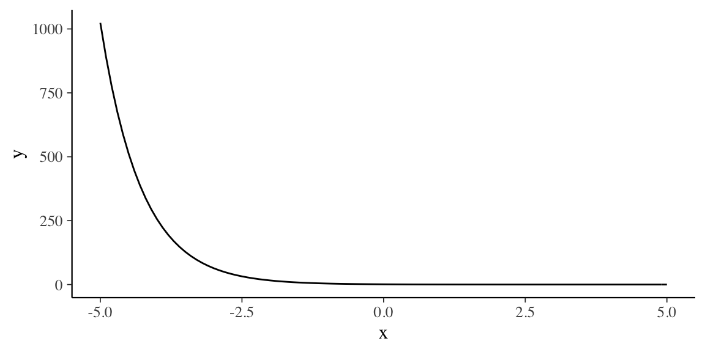
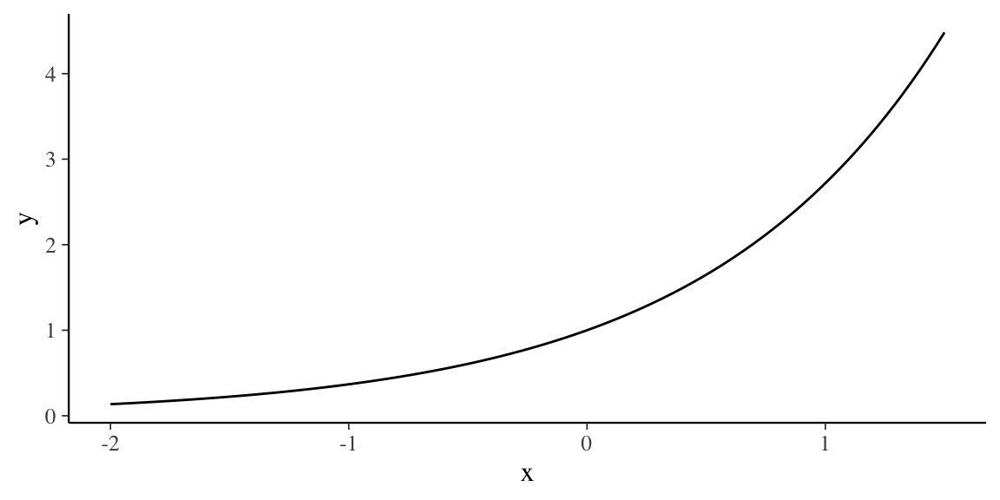

Appendice E Funzioni esponenziale e logaritmica
E.1 Funzione esponenziale
Definizione E.1 La funzione esponenziale con base \(a\) è \[\begin{equation} f(x) = a^x \end{equation}\] dove \(a > 0\), \(a \neq 1\) e \(x\) è qualsiasi numero reale.
La base \(a = 1\) è esclusa perché produce \(f(x) = 1^x = 1\), la quale è una costante, non una funzione esponenziale.
Per esempio, un grafico della funzione esponenziale di base 2 si trova con
exp_base2 <- function(x) {
2^x
}
tibble(x = c(-5, 5)) %>%
ggplot(aes(x = x)) +
stat_function(fun = exp_base2) Se usiamo la base 4 troviamo
exp_base4 <- function(x) {
4^x
}
tibble(x = c(-5, 5)) %>%
ggplot(aes(x = x)) +
stat_function(fun = exp_base4) Oppure
exp_base4 <- function(x) {
4^-{
x
}
}
tibble(x = c(-5, 5)) %>%
ggplot(aes(x = x)) +
stat_function(fun = exp_base4)
In molte applicazioni la scelta più conveniente per la base è il numero irrazionale $e = 2.718281828. Questo numero è chiamato la base naturale. La funzione \(f(x) = e^x\) è chiamata funzione esponenziale naturale.
Per esempio, abbiamo
exp_base_e <- function(x) {
exp(x)
}
tibble(x = c(-2, 1.5)) %>%
ggplot(aes(x = x)) +
stat_function(fun = exp_base_e)
E.2 Funzione logaritmica
La funzione logaritmica è la funzione inversa della funzione espenziale.
Definizione E.2 Siano \(a > 0\), \(a \neq 1\). Per \(x > 0\) \[\begin{equation} y = \log_a x \quad \text{se e solo se } x = a^y. \end{equation}\] La funzione data da \[\begin{equation} f(x) = \log_a x \end{equation}\] è chiamata funzione logaritmica.
Le seguenti equazioni sono dunque equivalenti:
\[\begin{equation} y = \log_a x \qquad x = a^y. \end{equation}\]
La prima equazione è in forma logaritmica e la seconda è in forma esponenziale. Ad esempio, l’equazione logaritmica \(2 = \log_3 9\) può essere riscritta in forma esponenziale come \(9 = 3^2\).
Quando valutiamo i logaritmi, dobbiamo ricordare che un logaritmo è un esponente. Ciò significa che \(\log_a x\) è l’esponente a cui deve essere elevato \(a\) per ottenere \(x\).